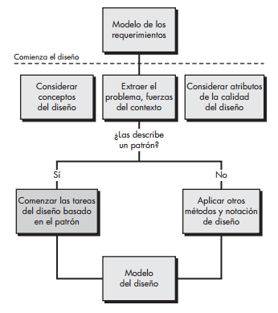

Los mejores diseñadores en cualquier campo tienen una aptitud asombrosa para ver los patrones que caracterizan un problema y los que pueden combinarse para generar una solución.

- El diseño basado en patrones, en contexto
El diseño basado en patrones no se utiliza en el vacío. Los conceptos y técnicas analizados para el diseño arquitectónico, en el nivel de componentes y de la interfaz de usuario, se utilizan junto con un enfoque basado en patrones.
- Pensar en patrones
El buen diseño comienza con la consideración del contexto: el panorama. Cuando se evalúa el contexto, se extrae una jerarquía de problemas que deben resolverse. Algunos de éstos serán de naturaleza global, mientras que otros se abocarán a características y funciones específicas del software.
- Tareas de diseño
-
- Examinar el modelo de requerimientos y desarrollar una jerarquía del problema.
- Determinar si se ha desarrollado un lenguaje del patrón confiable para el dominio del problema.
- A partir de un problema amplio, determinar si para el mismo se dispone de uno o más patrones arquitectónicos.
- Con el uso de colaboraciones provistas para el patrón arquitectónico, deben estudiarse los problemas en el nivel de subsistema o componente, y buscar los patrones más apropiados para enfrentarlos.
- Repetir los pasos 2 a 5 hasta que se hayan resuelto todos los problemas amplios.
- Si los problemas de diseño de la interfaz de usuario han sido aislados, buscar los muchos depósitos de patrones de diseño de la interfaz de usuario para encontrar patrones apropiados.
- Sin importar su nivel de abstracción, si resulta promisorio un lenguaje de patrón o un depósito de patrones o un patrón individual, hay que comparar el problema por resolver con el patrón o patrones presentados.
- Asegurarse de refinar el diseño a medida que se obtiene de los patrones, con el empleo de criterios de calidad como guía.
- Construcción de una tabla para organizar el patrón
Una tabla organizadora de patrones puede implementarse como modelo de hoja de cálculo con el uso del formato de la figura. La columna de la izquierda está organizada por datos/contenido, arquitectura, nivel de componentes y aspectos de la interfaz de usuario. En el renglón superior se enlistan cuatro tipos de patrón: base de datos, aplicación, implementación e infraestructura. En las celdas de la tabla se anotan los nombres de los patrones que son candidatos.

- Errores comunes en el diseño
Cuando se emplea el diseño basado en patrones, suelen ocurrir varios errores comunes. En ciertos casos, no se dedica el tiempo suficiente a entender el problema subyacente, su contexto y fuerzas, y en consecuencia se elige un patrón que parece correcto, pero es inapropiado para llegar a la solución que se requiere.